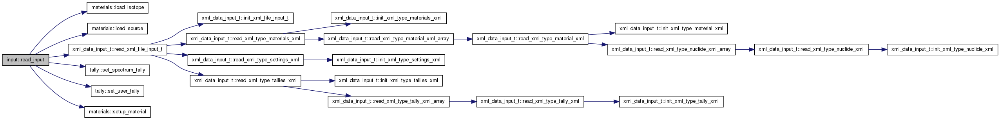

Handles reading in the input xml file and intializing global vars. More...
Functions/Subroutines | |
| subroutine, public | read_input |
| Reads the input xml file and sets global variables. | |
Detailed Description
Handles reading in the input xml file and intializing global vars.
Function/Subroutine Documentation
| subroutine,public input::read_input | ( | ) |
Reads the input xml file and sets global variables.
Definition at line 22 of file input.f90.
References global::emax, global::emin, materials::load_isotope(), materials::load_source(), global::mat, xml_data_input_t::material_, global::nhistories, xml_data_input_t::read_xml_file_input_t(), global::seed, tally::set_spectrum_tally(), tally::set_user_tally(), xml_data_input_t::settings_, materials::setup_material(), global::source_type, and xml_data_input_t::tallies_.
Referenced by initialize().
Here is the call graph for this function:

Here is the caller graph for this function: